PHY-2105 • Coulomb's Law · Electric Field · Electric Potential
This page condenses the three chapters. For full explanations and worked solutions:
Prints cleanly on white paper (Ctrl+P) — the navigation is hidden and the diagrams flip to dark-on-light.
| Quantity | Value | Quantity | Value |
|---|---|---|---|
| \(k = 1/4\pi\varepsilon_0\) | \(8.99\times10^{9}\) N·m²/C² | \(\varepsilon_0\) | \(8.85\times10^{-12}\) C²/N·m² |
| \(e\) | \(1.6\times10^{-19}\) C | 1 eV | \(1.6\times10^{-19}\) J |
| \(m_e\) | \(9.11\times10^{-31}\) kg | \(m_p\) | \(1.67\times10^{-27}\) kg |
| \(G\) | \(6.67\times10^{-11}\) N·m²/kg² | \(N_A\) | \(6.022\times10^{23}\) /mol |
| 1 D (debye) | \(3.34\times10^{-30}\) C·m | \(g\) | 9.8 m/s² |
Prefixes: m \(10^{-3}\) · μ \(10^{-6}\) · n \(10^{-9}\) · p \(10^{-12}\) · f \(10^{-15}\) · cm → ×\(10^{-2}\) · nm → ×\(10^{-9}\) · fm → ×\(10^{-15}\). The slides sometimes round \(k \approx 9\times10^9\) or even \(10^{10}\) — say which you use.
Like charges repel, unlike attract. Force acts along the line joining them.
\(\hat r\) points from the source to the charge acted on.
Vector sum: resolve, add components, recombine.
Check the quadrant from the signs.
Charge comes in whole multiples of e.
M = molar mass, Z = electrons (protons) per atom/unit.
Always use centre-to-centre distance.
r cancels. Two electrons: \(4\times10^{42}\); e–p: \(2\times10^{39}\).
"Acceleration as they separate".
Q = area under the i–t graph.
1 V = 1 J/C.
Energy = area under the P–t graph.
N/C. Direction = force on a positive test charge.
Away from +, toward −.
Electron: force opposite to \(\vec E\).
Vector sum — components.
60° → \(\sqrt3E\); 90° → \(\sqrt2E\); 120° → \(E\).
Between them, nearer the smaller one. Square-root both sides. (Unlike charges: outside, beyond the smaller.)
Then \(v = v_0 + at\), \(x = v_0t + \tfrac12at^2\).
λ = charge per length (C/m).
0 at the centre; \(\to kq/z^2\) far away.
Points from − to +. C·m. Molecule (slide method): \(d = p/Ne\).
Falls as \(1/z^3\). On the bisector: \(kp/r^3\).
Max \(pE\) at 90°; zero at 0° and 180°.
\(-pE\) at 0° (stable), \(+pE\) at 180° (unstable).
0°→180°: \(2pE\); 0°→θ: \(pE(1-\cos\theta)\).
Don't drop the minus on the ĵ term.
W = work by the field. Field does + work → U falls.
Volt = J/C. A scalar — add with signs.
Keep the sign of q (electron: q = −e).
Path doesn't matter.
V falls along \(\vec E\).
Magnitude \(V = Ed\).
Sign of q stays in. 1/r, not 1/r².
No components, no angles.
Square centre, arc centre, ring axis.
From \(E = kq/r^2\), \(V = kq/r\).
θ from the axis; 0 on the bisector.
Still a scalar sum.
E points where V falls fastest.
Like: + ; unlike: −.
3 charges → 3 pairs; 4 → 6.
Two movers: add both K's (slide method).
J ÷ \(1.6\times10^{-19}\) → eV.
Speed from a potential drop: \(\tfrac12mv^2 = |q\Delta V|\).
| Force F | Field E | Potential V | Potential energy U | |
|---|---|---|---|---|
| Point charge | \(kq_1q_2/r^2\) | \(kq/r^2\) | \(kq/r\) | \(kq_1q_2/r\) |
| Type | vector | vector | scalar | scalar |
| Unit | N | N/C = V/m | V = J/C | J (or eV) |
| Falls off as | \(1/r^2\) | \(1/r^2\) (dipole \(1/r^3\)) | \(1/r\) (dipole \(1/r^2\)) | \(1/r\) |
| Belongs to | a pair | the point | the point | the system |
| Combine by | vector sum | vector sum | plain sum with signs | sum over pairs |
| Links | \(F = qE\) | \(E = -dV/ds\) | \(V = U/q\) | \(U = qV\) |
| Situation | Distance / result |
|---|---|
| Square of side a — corner to centre | \(r = a/\sqrt2\) (diagonal \(a\sqrt2\)) |
| Rectangle 2a × a — corner to centre | \(\sqrt{a^2 + (a/2)^2} = \tfrac{\sqrt5}{2}a\) |
| Equilateral triangle side a — height; vertex to centroid | \(\tfrac{\sqrt3}{2}a\); \(a/\sqrt3\) |
| Isosceles right triangle legs a — hypotenuse | \(a\sqrt2\); midpoint of hypotenuse is \(a/\sqrt2\) from all three corners |
| Point on the bisector, charges ±d apart, height y | \(r = \sqrt{d^2 + y^2}\); \(\cos\theta = d/r\), \(\sin\theta = y/r\) |
| 3-4-5 and 1-2-√5 triangles | \(\cos = 3/5, 4/5\); \(\cos = 1/\sqrt5, 2/\sqrt5\) |
| Two equal vectors at angle φ | \(2E\cos(\varphi/2)\) along the bisector |
| Square with all four equal charges, at centre | E = 0, F = 0; but V = 4kq/r |
| Problem type | Method | Practise |
|---|---|---|
| Charges on a line | Signs along x; arrows first | Coulomb Ex-4, A2 Q4 |
| Charges in 2-D (triangle, square) | Each vector → components → resultant | Coulomb Ex-5, A2 Q2, Q6, Field P1 |
| Null point | \(q_1/x^2 = q_2/(d-x)^2\), square-root | Coulomb P6, A2 Q1, Field PPS 2 |
| Charge in matter / stripped pennies | \(q = (m/M)N_AZe\), then F, a | A2 Q3, Q5 |
| Electric vs gravity | Ratio; r cancels | Coulomb Ex-6, P7 |
| Field at a point (off-axis) | Away/toward → components | A2 Q7, Field PPS 12 |
| Symmetric arrays | Cancel pairs first | A2 Q10, Field PPS 5 |
| Dipole: p, τ, U, W | \(p = qd\); \(pE\sin\theta\); \(-pE\cos\theta\); \(U_f - U_i\) | Field P3, A2 Q8 |
| Dipole field / potential far away | \(2kp/z^3\); \(kp\cos\theta/r^2\) | A2 Q9, Potential PPS 7 |
| ΔU and ΔV for a moving charge | \(W = qEd\cos\theta\), \(\Delta U = -W\), \(\Delta V = \Delta U/q\) | Potential P1, PPS 13 |
| Potential of several charges | \(\sum kq_i/r_i\) with signs | Potential P2, PPS 17, 18 |
| Work to bring a charge in | \(W = qV\) at the end point | PPS 10, 14 |
| Energy of a configuration | Sum over pairs | Potential P6, PPS 16 |
| Closest approach | \(K = kq_1q_2/r_{min}\) | PPS 8, 9 |
| Graph questions | See section 9 | Field graphs, Potential graphs |
| Electric field | Force per unit positive test charge at a point, \(\vec E = \vec F/q_0\). |
| Electric dipole | Equal and opposite charges ±q a distance d apart; moment \(p = qd\), from − to +. |
| Electric potential | Work to bring a unit positive charge from the reference point (∞) to the point without acceleration; \(V = U/q\). |
| Potential energy | Energy of a configuration of charges from the conservative Coulomb force; \(\Delta U = -W\). |
| Equipotential surface | Adjacent points with the same V; no work is done moving along it. |
| Electron-volt | Energy gained by charge e through 1 V: \(1.6\times10^{-19}\) J. |
| Linear charge density | Charge per unit length λ (C/m). |
| Quantization / conservation | q = ne; the total charge of an isolated system never changes. |
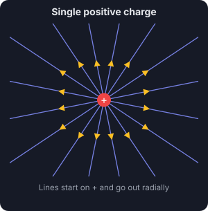
Field lines: + charge
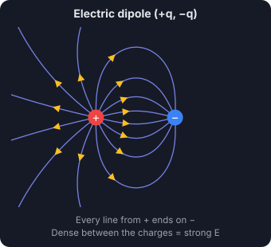
Field lines: dipole
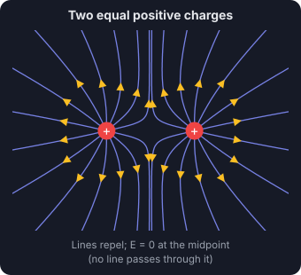
Field lines: two + charges
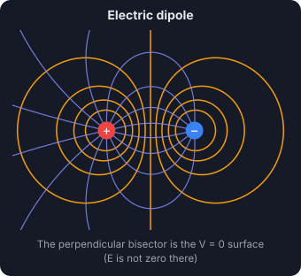
Equipotentials ⊥ field lines
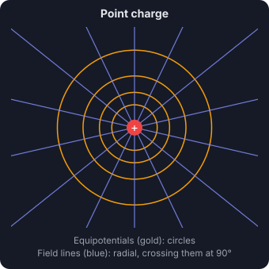
Point charge: circles
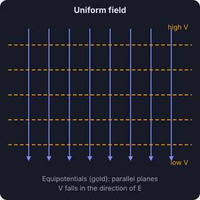
Uniform field: planes
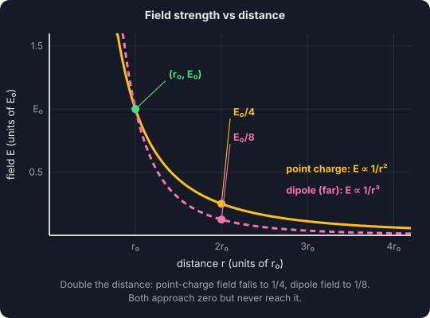
E vs r: 1/r² and 1/r³
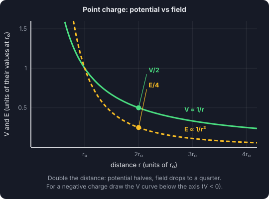
V (1/r) vs E (1/r²)
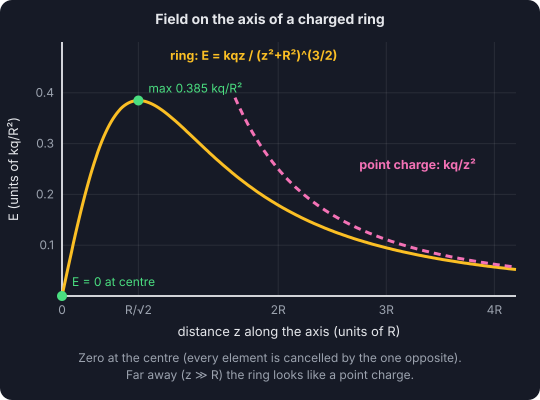
Ring field on its axis
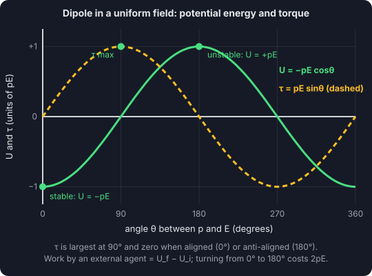
Dipole U and τ vs θ
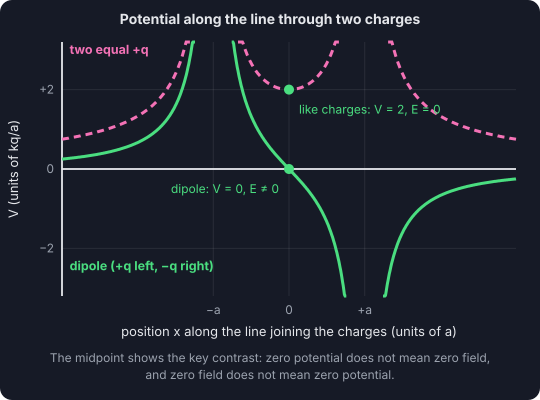
V along two charges
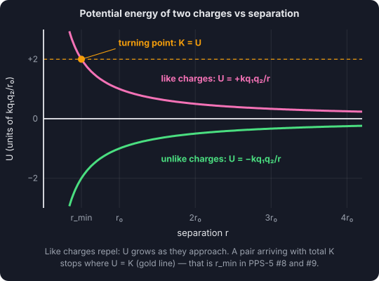
U vs r (closest approach)